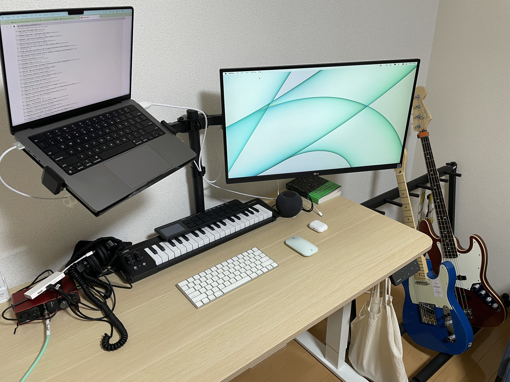

重返日本的三个星期感受
到东京已经第三个星期了，虽然下周才开始工作，但今天才几乎把家里布置好。
我不知道在别的国家工作怎么样，但我觉得日本工作应该是比较麻烦的：
首先是租房。尽管我学生时代在日本已经度过了两年半，但作为外国人依然觉得租房困难重重。而且，相比我离开日本的2019年，现在日本的房价似乎普遍有上涨。
其次是办理手机。日本生活的一切都是围绕着手机和住址进行的，所有的网站注册都需要提供这两样东西，反过来说，一旦网站的数据发生泄漏，结局可能比中国严重很多。前段时间disk union的网站发生了用户数据泄漏，为此他们的web shop停摆了很久，刚刚我重新check才发现他们终于重新打开了：
平素は弊社「ディスクユニオン オンラインショップ」のご利用をいただきありがとうございます。 2022年6月24日(金)にお客様の個人情報が漏えいしている可能性があることを確認し、同日23時頃より弊社オンラインショップ「diskunion.net」ならびに「audiounion.jp」の両WEBサイトを一時閉鎖、外部のITセキュリティ専門機関の指導の下、再発防止の対策を実施いたしました。 そのため、本日2022年9月6日、本件WEBサイトのサービスの再開をお知らせいたします。なお、情報漏えいの原因となったサーバーについてはアクセスを遮断しており、セキュリティが確保された状態で管理しております。
但办理手机和银行卡首先需要你在役所注册过住址，但你能够租到房子的前提往往是你拥有手机号，拥有银行卡，所以对于外国人来说是一个知名的死循环。我无法想象一个在日本没有任何人际关系的人如何进入这个社会工作。
虽然说日本是一个变化缓慢的国度，但这次来到日本确实感觉到发生了很多变化。比如QR code支付方式的崛起：以前很多只支持现金的店，现在都可以使用扫码支付了；一些店以前只可以人工点单，现在变成了pad点单，机器人送菜；以前书店里人工智能区域的书籍现在变成了web3；电力和瓦斯开放了民营，你现在可以使用东京电力的煤气，也可以使用东京瓦斯的电力了。再对日本报以世外桃源式的想象确实是有点浪漫化了，不过虽然也在变化，总觉得演进的方式仍然和世界主流不太一样。（不过，世界主流到底是什么
这么一想，像我这样有过两段分开的长居日本的人应该不会太多吧。很多人要么在这里毕业之后就留在这里工作，要么就是毕业之后离开了。这样的生活经验也给我观察这里的独特视角，希望我之后也可以多多留意身边的变化。
不过，和作为学生相比，作为社会人的感觉倒是很不一样。当学生的时候，我可以理所应当地和周围的日本人不一样，但作为社会人，我很多的时候希望可以完美地隐形在人群中。比如我的名字的假名拼法，我在学生时代心想，少数族裔（中国人在日本当然是少数族裔）就应该有少数族裔的念法，我参考了西裔人口在美国的做法，把自己的名字标注的假名是中文读音的片假名。但我现在觉得，我应该入乡随俗，因为我真的不介意他们发什么音……但问题是我之前已经用中文的发音注册了不少网站和银行卡，现在改过来的成本太高了，于是作罢。
作为社会人，我觉得自身的责任感也更重。以前我不介意自己穿成什么样，我自己舒服就好，但现在我觉得我有一份隐形的责任需要肩负。比如，我不希望让中国人的形象更差————不要理解错了，我一直是一个遵纪守法的中国人，比如在退租的时候我一向保持着良好的信用记录————我现在要做的事情就是在所有的场合都比日本人的平均素质高一点点，目的在于，就算整体族裔的形象很差，但我自己知道，跟我没有关系（当然其实是有关系的）。
我目前想要提高的点在于我的穿着打扮，我希望可以跟上日本人的平均水平，虽然让我每天穿衬衫打领带这也太难为我了，以及谢天谢地作为程序员上班也没有这样的dress code，但我的衣服实在是太不潮了。我认为当前最重要的一步就是穿阔腿长裤（穿短裤很容易看起来很土），其次是掩盖我很容易翘起来的头发。尽管我每天都洗头发，但因为我头型的原因，我的头发很容易翘起来，这样看上去像是很多天没有洗头发，我来的第一天就购买了定型喷雾，然后今天更是购买了渔夫帽，在我心中，渔夫帽等于潮男。
另一方面，我希望可以成功减肥。去年成功减的20斤已经在上海四五月的闭锁期间长回来了，我现在的目标就是再减回去，最好可以更进一步。因为在我看来，好看的前提条件就是瘦，胖男的穿衣搭配就是在丑和有亲和力之间徘徊，而只有瘦才有好看的潜质。虽然这个世界上很多人的胖乃是因为身体原因，但我知道我胖的原因在于摄入太多糖分而且懒惰。好在日本料理的食材当中百分之九十九我是不吃的，我相信我减肥有望。
日本确实让我产生了严重的容貌焦虑，但我相信这也有好的一面，至少我自己也能看我自己更顺眼一点。
我非常喜欢上网，我父亲在我八岁的时候就把我带到了网吧教我上网。如果没有网络，像我这样的县城小孩是绝无可能欣赏到这个世界的美妙音乐，以及认识诸多同样喜欢音乐的人的。因此对于阻碍人正常上网的东西，我无论如何也无法接受，在我成为程序员之后，我发现我确实没有办法长久地在brew install和go get 都需要特殊手段的地方生活的。
既然来到了这里，我希望可以更专注在自己想要做的事情上面，少一点阴阳怪气，使用互联网干更多的事情。
新的工作台，希望可以在这个角落做更多的事:

If you like my article and want to donate, click the 捐赠 Donation button on the sidebar.